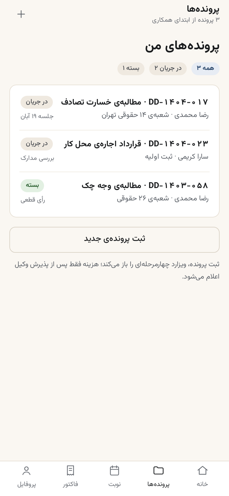
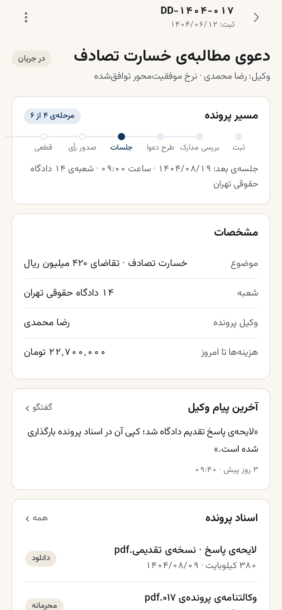
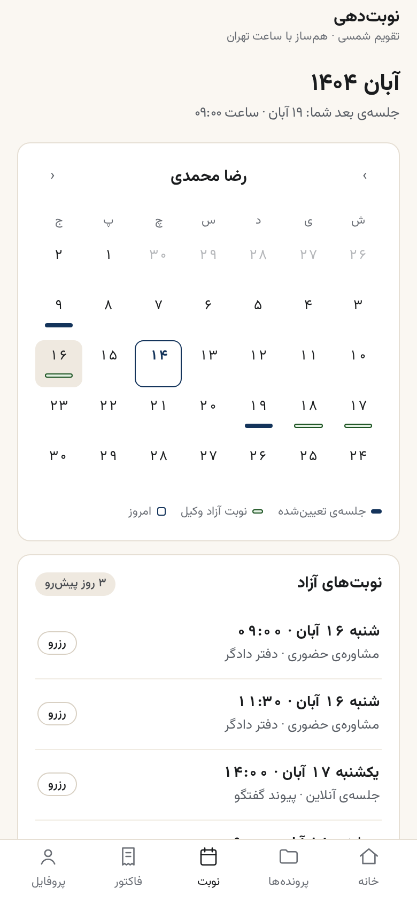
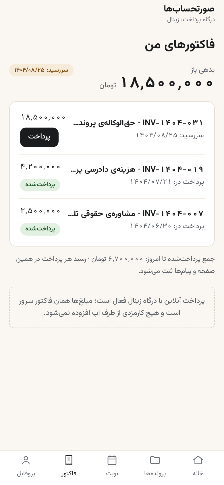
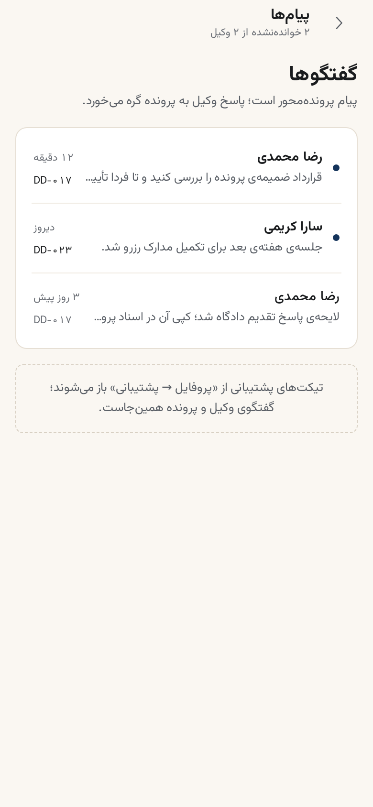
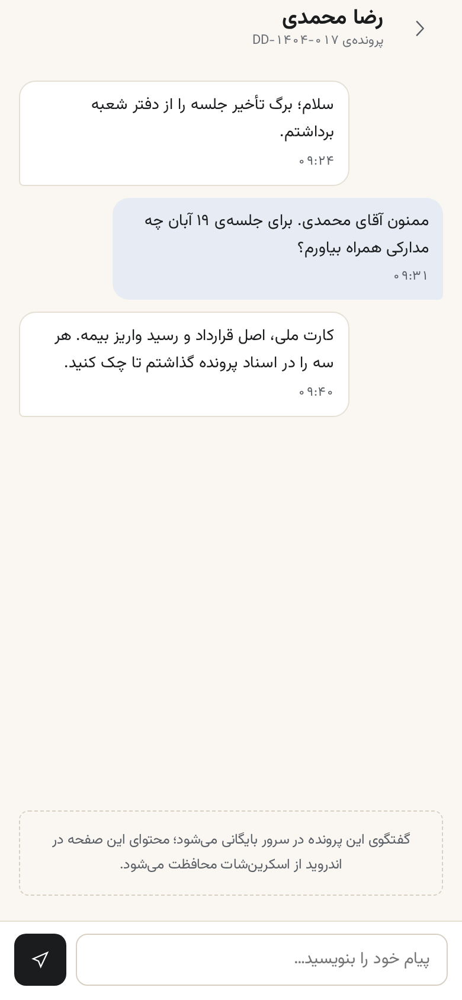
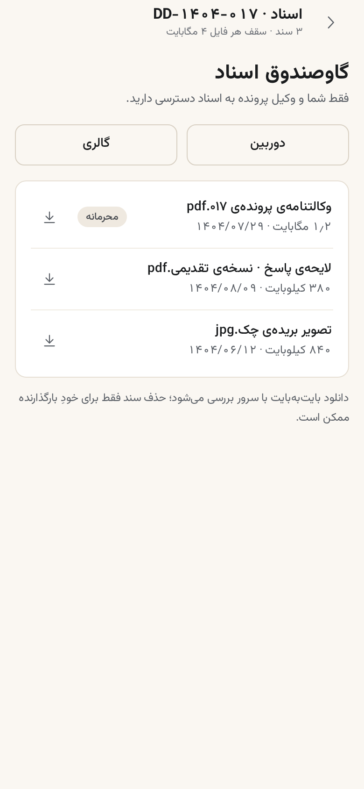
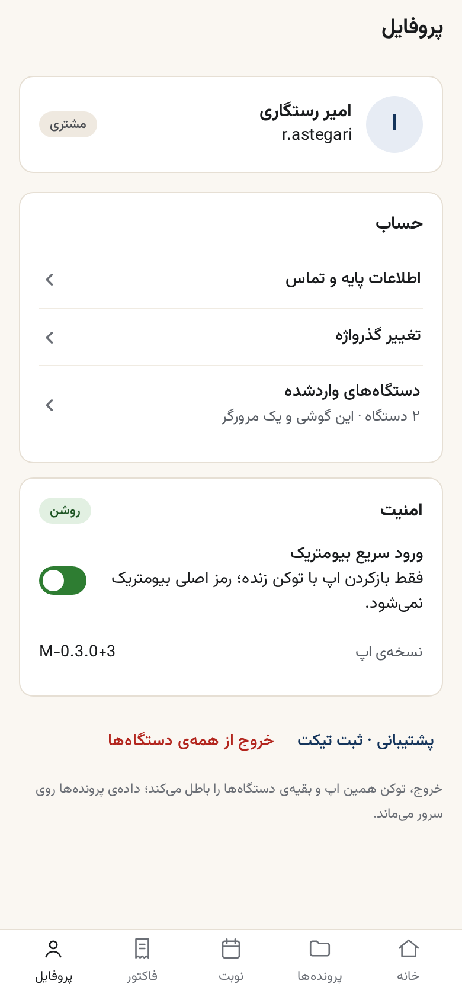

پیشنمایش طراحی صفحات موبایل دادگر
CMD-037منتظر تایید مدیر — پس از تایید، کدنویسی Flutter آغاز میشودپروتوتایپ سیمکشی صفحات — تازه (CMD-041) ←این پیشنمایش، «طراحی پیشفرض» هر ده صفحهی اپ موبایل است — همان معماری DOC-04 (تبهای پنجگانهی مشتری، فونت Vazirmatn، RTL کامل، اعداد و تقویم شمسی) با پالت قفلشدهی D-3 که خودتان در M0 تایید کردید. هیچ دادهی جعلی در کار نیست: اعداد همین پیشنمایش با قرارداد API فعلی سرور همخواناند و در پیادهسازی با دادهی واقعی جایگزین میشوند.
پایهی طراحی (با مهارت taste-skill — ریپوی درخواستی شما)
- سبک:
achromatic-ledgerاز کتابخانهی ۲۳ صفحهی محصول واقعی سنجیدهشده (برگهی seed321804971) — کروم بیرنگ و آرام؛ رنگ فقط روی داده. برای محصول حقوقی/مالی با نگاههای سریع روزانه انتخاب شد؛ از سبک «سرویسخبرگزادی» یا داشبوردهای پرزرقوبرق پرهیز شد. - چهره: «کاغذ رسمی پرونده» — زمینهی گرم
#FAF7F2(همان D-3) + سرمهای#14345Bفقط روی عنصر دادهی اصلی هر صفحه (جلسهی پیشرو، روزهای رزروشده، مسیر پرونده) + دکمهی اصلی نزدیکسیاه#1A1C1E+ سبز D-3 فقط سیگنال وضعیت. - عنصر امضایی: «مسیر پرونده» — نوار ششمرحلهای (ثبت تا قطعی) که در خانه و جزئیات پرونده میبینید؛ چیزی که اپهای عمومی ندارند.
- کنترل کیفی: هر ۱۰ صفحه با بازرس مرورگر واقعی (Chrome) سنجیده شد — صفر FAIL؛ هشدارهای باقیمانده سه دستهی قابلدفاعاند: زمینهی کرم (پالت D-3 قفلشده، کروما پایین — مجاز طبق برگه)، خالیِ عرض دسکتاپ (موکاپ ثابت ۳۹۰px است) و تراکم متن ریز ۱۱–۱۲px (مجاز §۱۲ قواعد تلفن).
ده صفحه — پرسش اصلی هر صفحه

۱ · ورود
«چطور وارد شوم؟» — حساب وب کافی است؛ OTP پیامکی و ذخیرهی توکن در Keystore/Keychain.

۲ · خانه
«الان کجای کارم است؟» — چهار کاشی + نوبت بعدی با مسیر پرونده + پروندههای اخیر + پیامها.

۳ · پروندهها
«پروندههایم چه وضعی دارند؟» — چیپ فیلتر، ردیف دوخطی با وکیل و جلسه بعد.

۴ · جزئیات پرونده
«این پرونده کجاست؟» — مسیر ششمرحلهای، مشخصات، آخرین پیام وکیل، اسناد.

۵ · نوبتدهی
«کی میتوانم وکیل را ببینم؟» — تقویم شمسی نیتیو؛ نوار سرمهای=جلسه، سبز=نوبت آزاد.

۶ · فاکتورها
«چقدر بدهکارم؟» — عدد اصلی ۲۸px درشت (تنها استثنای درشتنویسی: پول) + پرداخت زینال.

۷ · پیامها
«وکیل چه گفت؟» — نقطهی سرمهای خواندهنشده، پیوند هر گفتگو به پرونده.

۸ · گفتگوی پرونده
«چطور سریع جواب بگیرم؟» — پیام من راست، جواب وکیل چپ؛ در اندروید FLAG_SECURE.

۹ · گاوصندوق اسناد
«سندم کجاست؟» — آپلود دوربین/گالری، سقف ۴MB، برچسب محرمانه، دانلود بایتبهبایت.

۱۰ · پروفایل
«امنیت و دستگاههایم؟» — بیومتریک فقط برای بازکردن، خروج از همهی دستگاهها در انتها.
توکنهای بهکاررفته (صفر رنگ جدید — همه از D-3)
| نقش | مقدار | کجا |
|---|---|---|
| زمینه (کاغذ رسمی) | #FAF7F2 | پسزمینهی همهی صفحهها |
| سطح کارت | #FFFFFF | پنلها با لبهی ۱px #E6DFD4 — بدون سایه |
| رنگ داده (سرمهای) | #14345B | فقط عنصر داده: مسیر پرونده، روز رزروشده، پیام من — زیر ۱٪ پیکسل |
| مرکب (دکمهی اصلی) | #1A1C1E | دکمهی اصلی و پول |
| متن ثانویه | #5A5F66 | برچسبها و زیرخطها (همه ≥۴٫۵:۱) |
| سیگنال مثبت (سبز D-3) | #2E7D32 | قرص «پرداختشده»، نوار «نوبت آزاد»، سوییچ روشن |
| خطا | #B3261E | فقط «خروج از همهی دستگاهها» |
| شعاع / لمس | 12px / ≥44px | کارتها / همهی اهداف لمسی |
اگر تایید کنید — گام بعد
- این طراحی مرجع پیادهسازی
mobile/میشود: توکنها عیناً بهlib/design/tokens.dartمیروند (فقط نگاشت نقشها، بدون رنگ جدید) و هر صفحه به یکی از featureهای موجود (auth/home/cases/appointments/billing/messages/documents/profile) وصل میشود — M1 به بعد طبق DOC-04. - سه نکته که پیش از کدنویسی نظر شما را میخواهم: ① جاگذاری «پیامها» و «اسناد» خارج از تبهای پنجگانه (از خانه) — یا تب ششمی میخواهید؟ ② «پرداخت» روی خود کارت فاکتور — یا صفحهی تایید جدا؟ ③ صفحهی ورود بدون لوگوی کامل برند (فقط مونوگرام «د») — یا لوگوتایپ کامل بگذارم؟
- دادهی نمونه در
data.jsفهرست شده تا در تستهای contract با دادهی واقعی سرور جایگزین شود.